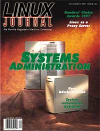

Shutdown Archive web server
Search:
Linux Journal
Issue #44/December 1997

Features
Pluggable Authentication Modules for Linux
by Andrew G. Morgan
An implementation of a user-authentication API
User Administration
by David Bandel
How to successfully manage your users.
Linux as a Proxy Server
by Peter Elton
To protect your system, put your firewall on a proxy server.
Readers' Choice Awards 1997
by Gena Shurtleff
System Information Retrieval
by Dan Lasley
Collect your system configuration files and store them on a separate machine.
News & Articles
Using Linux to Teach Unix System Administration
by Joe Kaplenk
Linux Makes the Big Leagues, Hewlett Packard Interworks 97
by Sam Williams
The Quick Start Guide to the GIMP, Part 2
by Michael J. Hammel
LJ
Interviews Larry Augustin
by Marjorie Richardson
Reviews
Product Review
OmniBasic
by Eric Harlow
Product Review
BRU 2000 for X11
by Garrett Smith
Product Review
Raima Database Manager++, Velocis Database Server
by Nick Xidis
Product Review
Perforce Software Configuration Management System
by Tom Bjorkholm
Product Review
VA Research VAR Station II
by Jim Dennis
Book Review
STL for C++ Programmers
by Bob Adkins
Book Review
The Linux Multimedia Guide
by Michael J. Hammel
WWWsmith
Industrializing Web Page Construction
by Pieter Hintjens
Book Review
CGI Developer's Resource
by Reuven Lerner
At the Forge
Keeping Programs Trim with CGI_Lite
by Reuven Lerner
Columns
Letters to the Editor
From the Editor
Promoting Linux
From the Publisher
A Confession and Some Ramblings
Linux Means Business
Linux in Camouflage
New Products
Kernel Korner
The New Linux RAID Code
by Miguel de Icaza, Ingo Molnar, and Gadi Oxman
Linux Gazette
Disk Hog: Tracking System Disk Usage
by Ivan Griffin
Best of Technical Support
by Gena Shurtleff
Archive Index
Shutdown Archive web server
Search:
Copyright © 1994 - 2018
Linux Journal
. All rights reserved.